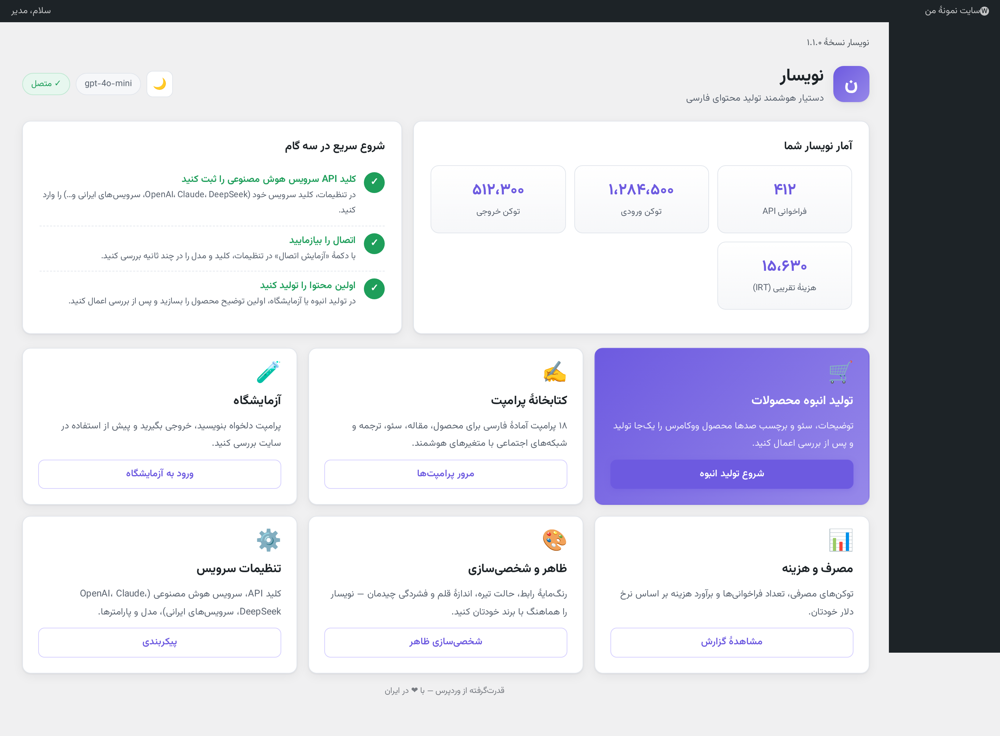
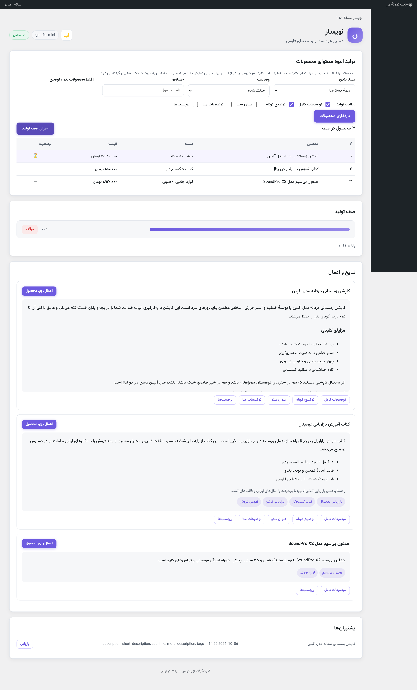
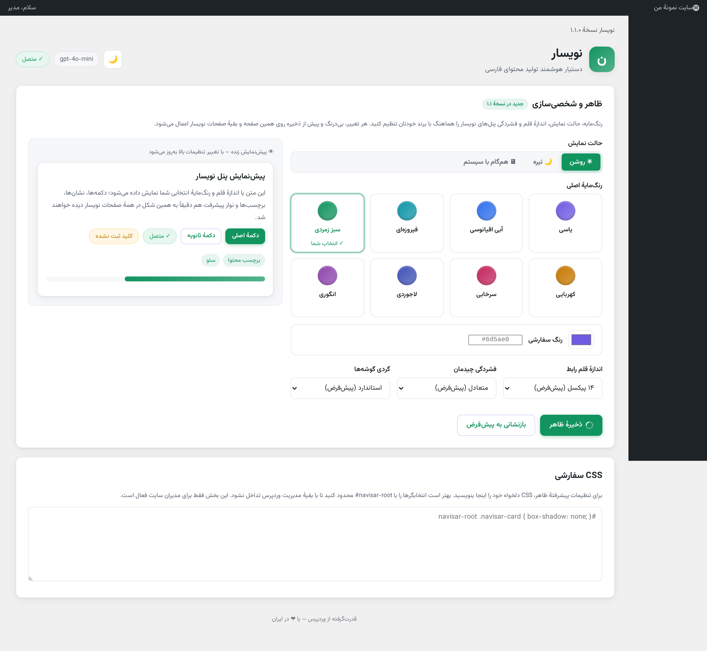
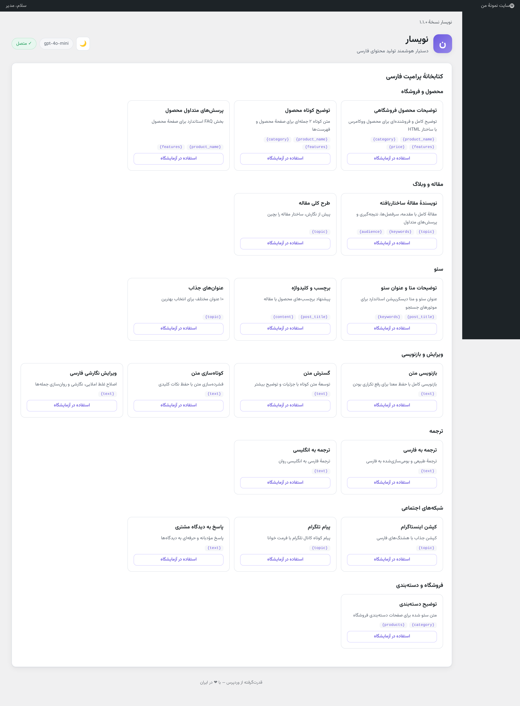
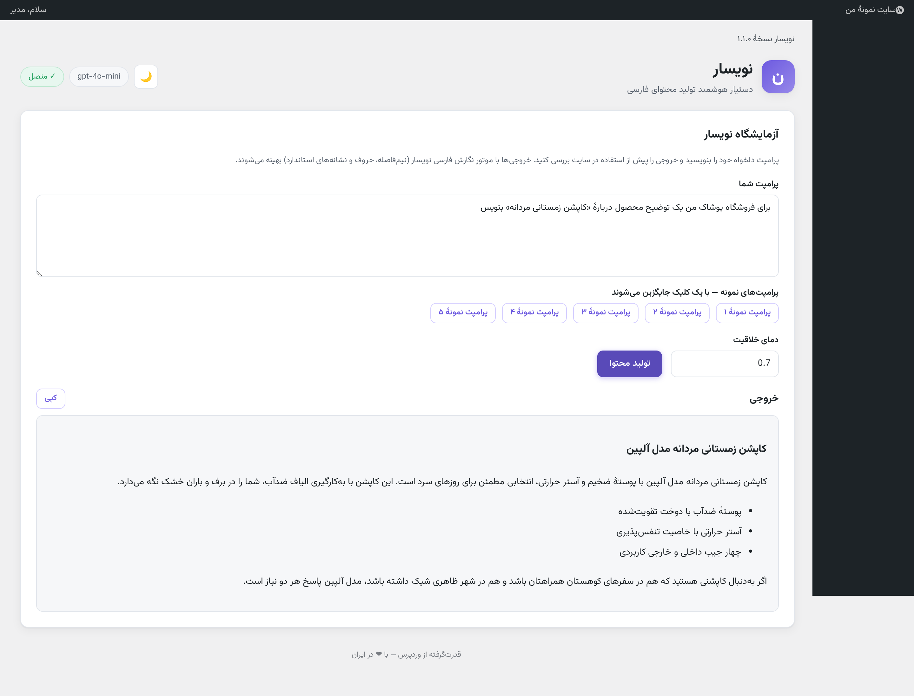
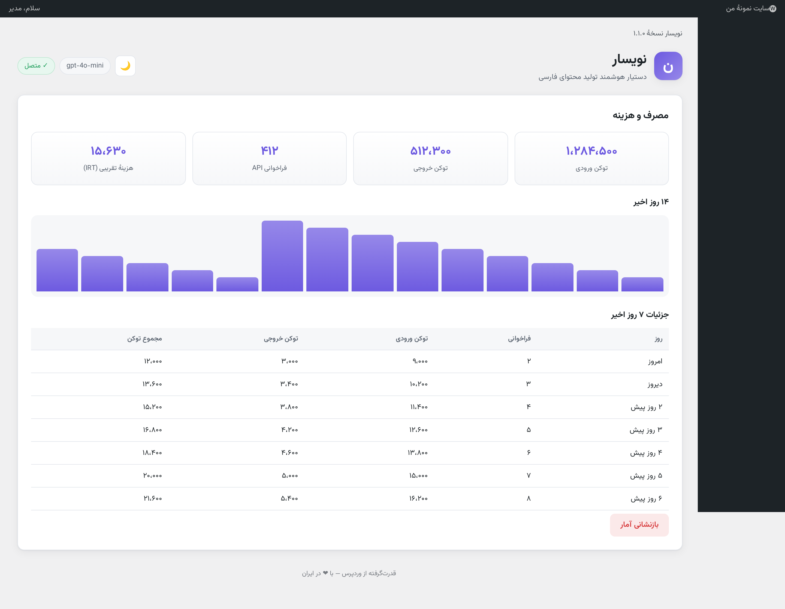
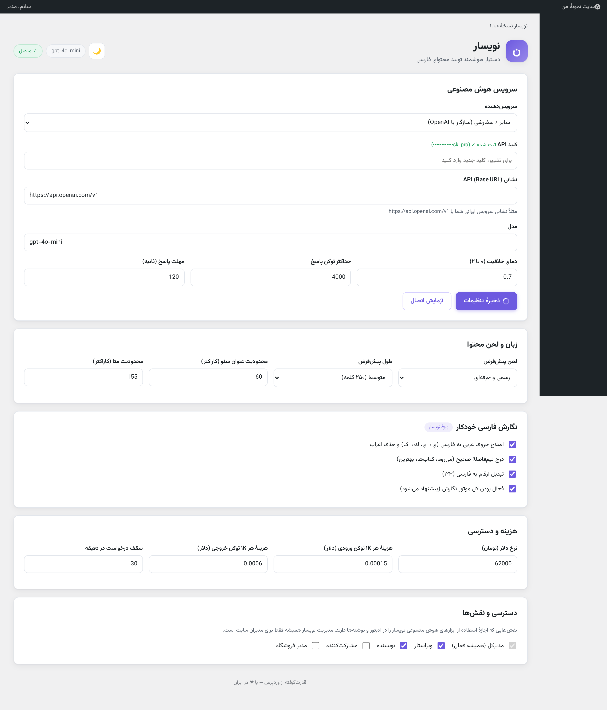

افزونهٔ وردپرس برای تولید خودکار توضیحات محصول، متن سئو و مقاله — با کلید API خودتان (BYOK)، موتور نگارش فارسی اختصاصی و پشتیبانگیری خودکار. سازگار با ووکامرس، گوتنبرگ و افزونههای سئو.







فیلتر بر اساس دسته، وضعیت یا فقط محصولات بدون توضیح
توضیحات، سئو و برچسبها با یک فراخوانی ساختاریافتهٔ API
نمایش قبل/بعد هر فیلد؛ هیچ تغییری بدون تأیید شما اعمال نمیشود
ذخیرهٔ خودکار نسخهٔ قبلی و بازیابی با یک کلیک